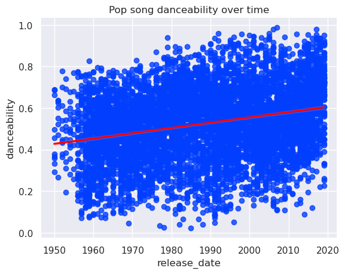
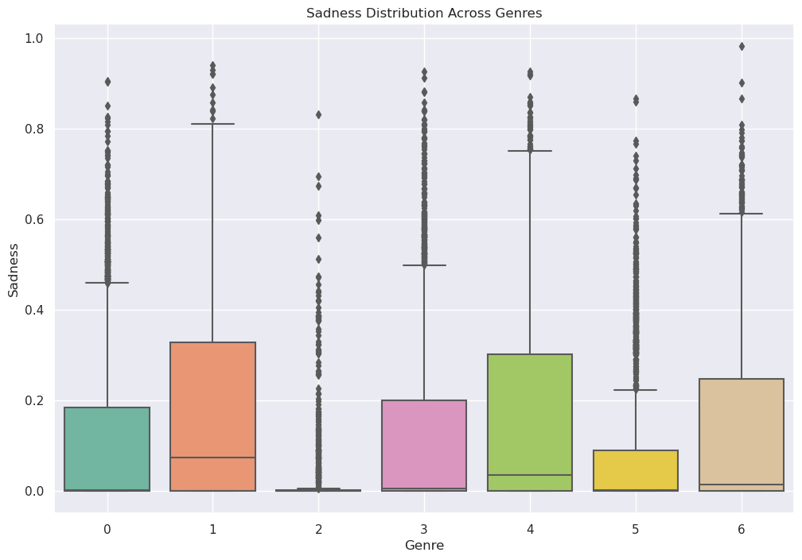

import pandas as pd
url = "https://raw.githubusercontent.com/PhilChodrow/PIC16B/master/datasets/tcc_ceds_music.csv"
df = pd.read_csv(url)Introduction
This blog will utilize neural networks, and data collected by Spotify, to determine the genre of a given song. Below we will create three neural networks with Torch and attempt to train them.
This project is currently a work in progress
df.head()| Unnamed: 0 | artist_name | track_name | release_date | genre | lyrics | len | dating | violence | world/life | ... | sadness | feelings | danceability | loudness | acousticness | instrumentalness | valence | energy | topic | age | |
|---|---|---|---|---|---|---|---|---|---|---|---|---|---|---|---|---|---|---|---|---|---|
| 0 | 0 | mukesh | mohabbat bhi jhoothi | 1950 | pop | hold time feel break feel untrue convince spea... | 95 | 0.000598 | 0.063746 | 0.000598 | ... | 0.380299 | 0.117175 | 0.357739 | 0.454119 | 0.997992 | 0.901822 | 0.339448 | 0.137110 | sadness | 1.0 |
| 1 | 4 | frankie laine | i believe | 1950 | pop | believe drop rain fall grow believe darkest ni... | 51 | 0.035537 | 0.096777 | 0.443435 | ... | 0.001284 | 0.001284 | 0.331745 | 0.647540 | 0.954819 | 0.000002 | 0.325021 | 0.263240 | world/life | 1.0 |
| 2 | 6 | johnnie ray | cry | 1950 | pop | sweetheart send letter goodbye secret feel bet... | 24 | 0.002770 | 0.002770 | 0.002770 | ... | 0.002770 | 0.225422 | 0.456298 | 0.585288 | 0.840361 | 0.000000 | 0.351814 | 0.139112 | music | 1.0 |
| 3 | 10 | pérez prado | patricia | 1950 | pop | kiss lips want stroll charm mambo chacha merin... | 54 | 0.048249 | 0.001548 | 0.001548 | ... | 0.225889 | 0.001548 | 0.686992 | 0.744404 | 0.083935 | 0.199393 | 0.775350 | 0.743736 | romantic | 1.0 |
| 4 | 12 | giorgos papadopoulos | apopse eida oneiro | 1950 | pop | till darling till matter know till dream live ... | 48 | 0.001350 | 0.001350 | 0.417772 | ... | 0.068800 | 0.001350 | 0.291671 | 0.646489 | 0.975904 | 0.000246 | 0.597073 | 0.394375 | romantic | 1.0 |
5 rows × 31 columns
engineered_features = ['dating', 'violence', 'world/life', 'night/time','shake the audience','family/gospel', 'romantic', 'communication','obscene', 'music', 'movement/places', 'light/visual perceptions','family/spiritual', 'like/girls', 'sadness', 'feelings', 'danceability','loudness', 'acousticness', 'instrumentalness', 'valence', 'energy'] Lets look at our different type of genres that we have!
df.groupby("genre").size()genre
blues 4604
country 5445
hip hop 904
jazz 3845
pop 7042
reggae 2498
rock 4034
dtype: int64Lets change reclassify
genres = {
"blues" : 0,
"country" : 1,
"hip hop" : 2,
"jazz" : 3,
"pop" : 4,
"reggae" : 5,
"rock" : 6
}
df = df[df["genre"].apply(lambda x: x in genres.keys())]
df["genre"] = df["genre"].apply(genres.get) Now that we have relabeled all of our categories lets ensure that they have all been converted to integer values
df.groupby("genre").size()genre
0 4604
1 5445
2 904
3 3845
4 7042
5 2498
6 4034
dtype: int64Now let’s calculate our base-rate
df.groupby("genre").size() / len(df)genre
0 0.162273
1 0.191915
2 0.031862
3 0.135521
4 0.248202
5 0.088045
6 0.142182
dtype: float64If we were to guess category 4 (pop) we would be right about 24.8% of the time so this our base-rate.
Lets utilize engineered_features
from torch import nn
from matplotlib import pyplot as plt
import numpy as np from torch.utils.data import Dataset, DataLoader
from sklearn.model_selection import train_test_split
class LyricsFromDF(Dataset):
def __init__(self, df):
self.df = df
def __getitem__(self, index):
return self.df.iloc[index, 1], self.df.iloc[index, 0]
def __len__(self):
return len(self.df)df_train, df_val = train_test_split(df,shuffle = True, test_size = 0.2)
train_data = LyricsFromDF(df_train)
val_data = LyricsFromDF(df_val)
train_data[1000]('randy rogers band', 34490)
!pipinstall torchtext
tokenizer = get_tokenizer('basic_english')
tokenized = tokenizer(train_data[194][0])
tokenized/usr/bin/bash: line 1: pipinstall: command not foundNameError: name 'get_tokenizer' is not definedclass TextClassificationModel(nn.Module):
def __init__(self, vocab_size, embedding_dim, max_len, num_class)
class EngineeredNetwork(nn.Module):
def __init__(self, input_size, num_classes):
super().__init__()import time
def train(dataloader):
epoch_start_time = time.time()from matplotlib import pyplot as plt
pop_df = df[df['genre'] == 4]
import seaborn as sns
sns.set_theme(palette="bright")
ax = sns.regplot(data=pop_df, y="danceability", x="release_date", line_kws={"color": "red"})
# Set the title
ax.set_title("Pop song danceability over time")
# Show the plot
plt.show()
from matplotlib import pyplot as plt
pop_df = df[df['genre'] == 4]
import seaborn as sns
sns.set_theme(palette="bright")
ax = sns.regplot(data=pop_df, x="danceability", y="release_date", line_kws={"color": "red"})
# Set the title
ax.set_title("Pop song danceability over time")
# Show the plot
plt.show()from matplotlib import pyplot as plt
import seaborn as sns
sns.set_theme(palette="bright")
plt.figure(figsize=(12, 8))
sns.boxplot(data=df, x='genre', y='sadness', palette='Set2')
plt.title('Sadness Distribution Across Genres')
plt.xlabel('Genre')
plt.ylabel('Sadness')
#plt.xticks(rotation=10) # Rotate x-axis labels for better visibility
plt.grid(True)
plt.show()